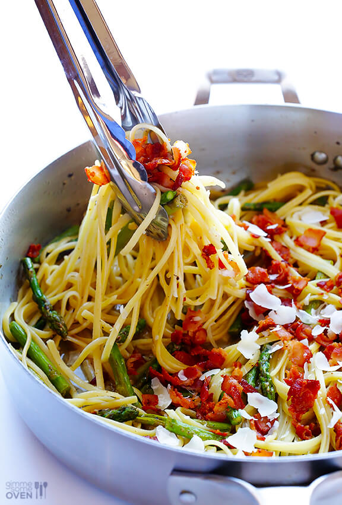

★★★★☆
recept | hoofdgerecht
Boontjes met spekjes en pasta
ingrediënten
aanwijzingen
- Kook de pasta in een grote pan met gezouten water beetgaar, voeg halverwege de sperziebonen toe;
- Bak de spekblokejs in een koekenpan tot ze knapperig worden en haal ze uit de pan;
- Voeg de wijn toe aan de koekenpan en laat deze even in koken;
- Voeg de pasta, sperziebonen, en spekblokjes toe aan de koekenpan en mix deze door elkaar;
- Garneer met de parmezaanse kaas en serveer.
Een makkelijk en snel recept voor de doordeweekse dag; gevonden op pinterest.